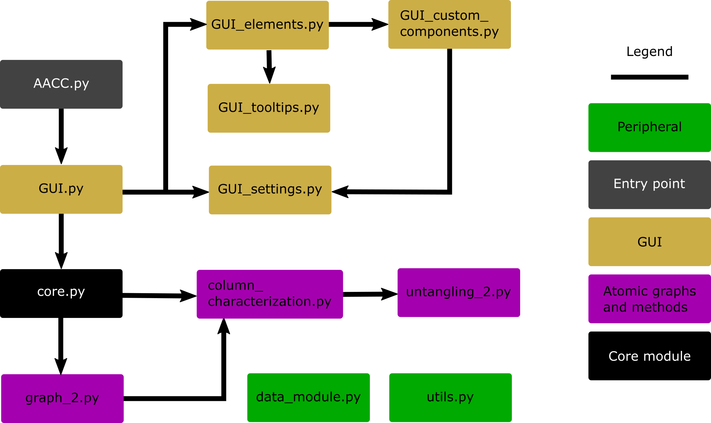

4. Documentation¶
The modular structure of AutomAl 6000 is shown below. It has a core module that internally acts as an API for the GUI. The core module is what controls the project data and workflow. Its main goal is to translate information from a HAADF-STEM image into information in the form of digraph-like atomic graphs. The graphs and related mathematics and data is contained in the graph module, which in turn uses graph operations from the column_characterization module. The GUI is built to plug into the core module, but the core module does not know about the GUI. In the image below, arrows indicate plug-in direction, ie if module A points to module B, then A imports B, etc…


Figure 5.1: Import graph for AutomAl 6000¶